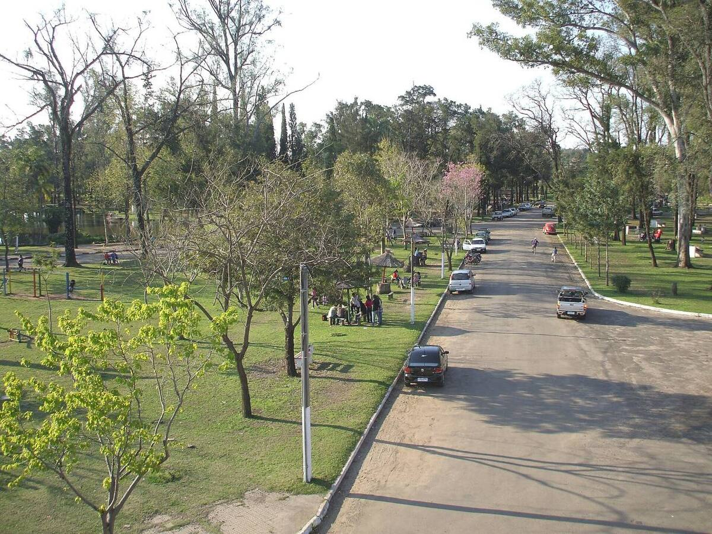
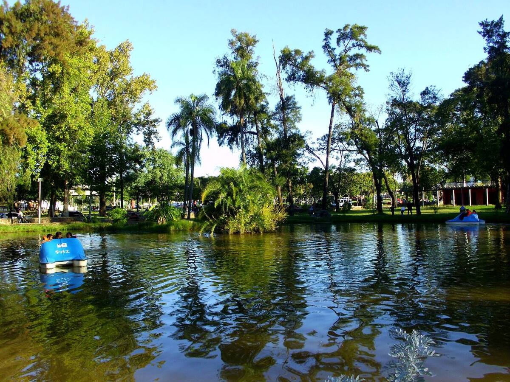
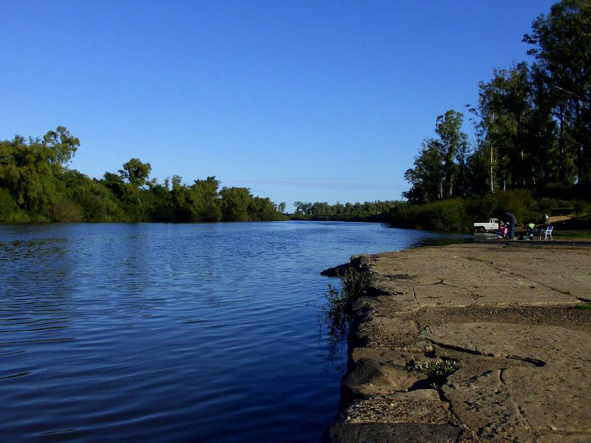
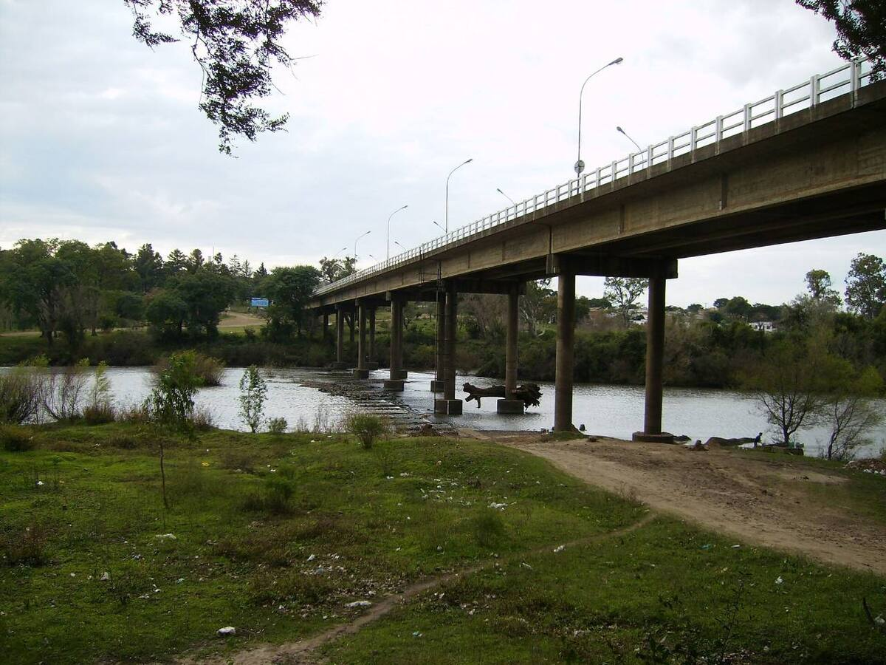
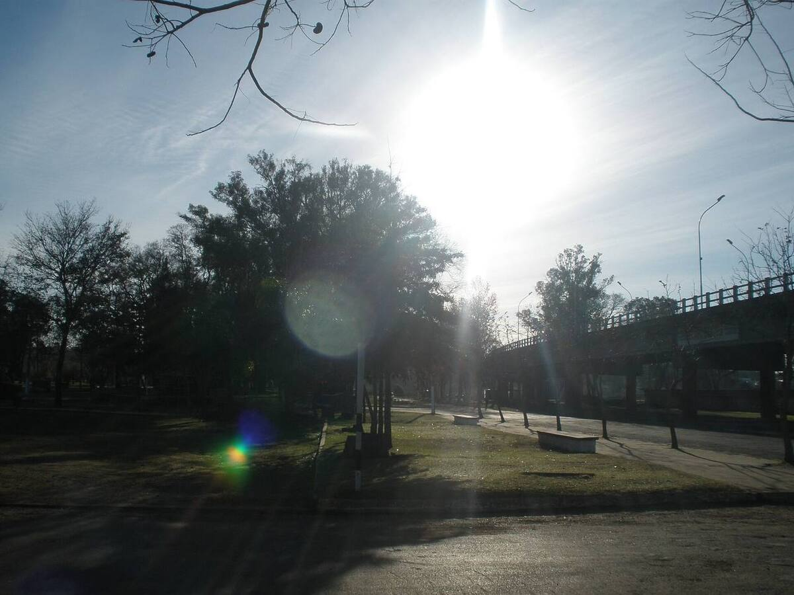

Un parque a orillas del Cuareim
Es el gran espacio verde de la ciudad, sobre el río que marca la frontera con Brasil. Su nombre homenajea el 7 de setiembre, fecha de la independencia brasileña. Del otro lado del río está Quaraí.
- Parque Rodó, con lago artificial, pista de mountain bike y pista de patinaje.
- Carpas, quinchos y pista de salud.
- El Balneario Municipal, junto al paseo.
- Una fuente luminosa en la cabecera del puente.
Puente Internacional de la Concordia
Une Artigas con Quaraí y mide unos 750 metros. Se inauguró el 3 de abril de 1968 y está habilitado para importación y exportación.
En 2026 se terminó su rehabilitación: nuevo pavimento, juntas de dilatación, barandas y veredas, con una inversión cercana a 900.000 dólares.
Fotos

Foto: Asiria Pacheco · CC BY-SA 3.0

Foto: Gerardo Conti P · CC BY-SA 3.0

Foto: Gerardo Conti P · CC BY-SA 3.0

Foto: Da dinges · Dominio público

Foto: Asiria Pacheco · CC BY-SA 3.0